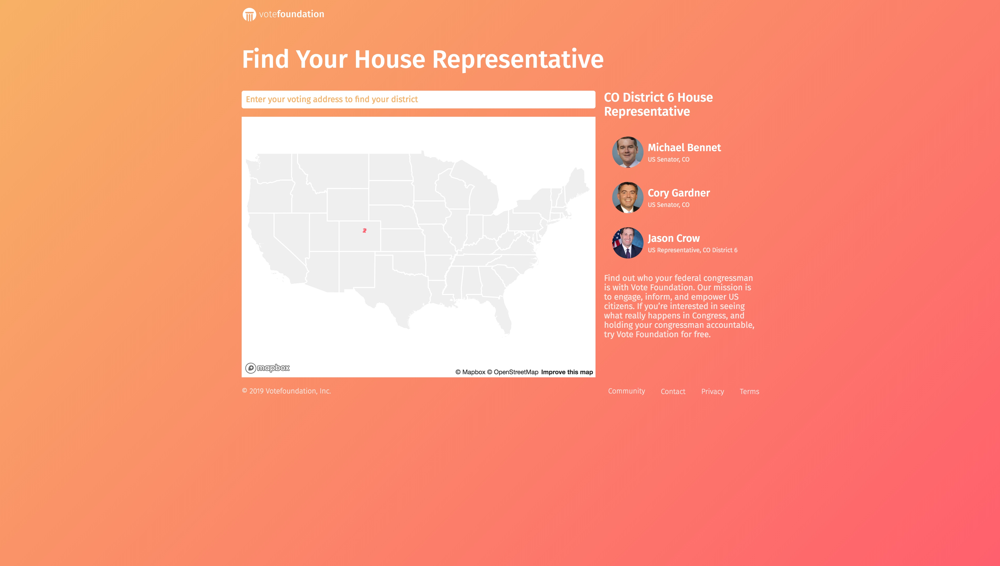

SEO Landing Pages Project
Vote Foundation needed to make over their three SEO Landing pages. Using a provided mockup, I was able to recreate their pages, improve conversion rate, and improve loading times. During this project I discovered many areas where the code could be more D.R.Y and human readable, so I refactored code in the process.
Visit Site HereBefore
After